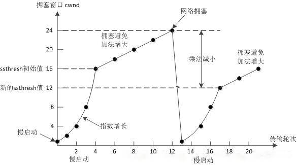
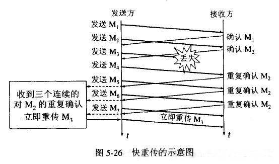

TCP的拥塞控制是怎么实现的

拥塞控制主要由四个算法组成： 慢启动（Slow Start）、拥塞避免（Congestion voidance）、快重传 （Fast Retransmit）、快恢复（Fast Recovery） 。
慢启动：刚开始发送数据时，先把拥塞窗口 cwnd（congestion window）设置为一个 MSS（最大报文段长度）的较小值，每收到一个新的确认报文之后，就把拥塞窗口加 1 个 MSS。这样每经过一个传输轮次（或者说是每经过一个往返时间 RTT），拥塞窗口的大小就会加倍， TCP 发送速率起始慢，但在慢启动阶段以指数增长 。

那么何时结束这种指数增长呢？ 1. 存在一个由超时指示的丢包事件（即拥塞） TCP 发送方将 cwnd 设置为 1 并重新开始慢启动过程。它还将第二个状态变量的值 ssthresh （"慢启动阙值"的速记）设置为 cwnd / 2，即当检测到拥塞时将 ssthresh 置为拥塞窗口值的一半。 2. cwnd 的值等于 ssthresh 时 当检测到拥塞时 ssthresh 设为 cwnd 的一半，当到达或超过 ssthresh 的值时，继续使用 cwnd 翻番可能有些鲁莽。因此，当 cwnd 的值等于 ssthresh 时，结束慢启动并且 TCP 转移到拥塞避免模式。 3. 检测到 3 个冗余 ACK 这时 TCP 执行一种快速重传并进入快速恢复。
拥塞避免：当拥塞窗口的大小达到慢开始门限（slow start threshold）时，开始执行拥塞避免算法，拥塞窗口大小不再指数增加，而是线性增加，即每经过一个传输轮次只增加 1 MSS。
何时应当结束拥塞避免的线性增长呢？ 1. 出现超时时 与慢启动一样，cwnd 的值被设置为 1 个 MSS，当丢包事件出现时，ssthresh 的值被更新为 cwnd 值的一半。 2. 三个冗余 ACK TCP 对这种丢包事件的行为，相比于超时指示的丢包，应当不那么剧烈：TCP 将 cwnd 的值减半，并且当收到 3 个冗余的 ACk，将 ssthresh 的值记录为 cwnd 的值的一半，接下来进入快速恢复的状态。
快重传：快重传要求接收方在收到一个失序的报文段后就立即发出重复确认（为的是使发送方及早知道有报文段没有到达对方）而不要等到自己发送数据时捎带确认。快重传算法规定，发送方只要一连收到三个重复确认就应当立即重传对方尚未收到的报文段，而不必继续等待设置的重传计时器时间到期。
- 快恢复：当发送方连续收到三个重复确认时，就把慢开始门限减半，然后执行拥塞避免算法。不执行慢开始算法的原因：因为如果网络出现拥塞的话就不会收到好几个重复的确认，所以发送方认为现在网络可能没有出现拥塞。
也有的快重传是把开始时的拥塞窗口 cwnd 值再增大一点，即等于 ssthresh + 3 * MSS 。这样做的理由是：既然发送方收到三个重复的确认，就表明有三个分组已经离开了网络。这三个分组不再消耗网络的资源而是停留在接收方的缓存中。可见现在网络中减少了三个分组。因此可以适当把拥塞窗口扩大些。